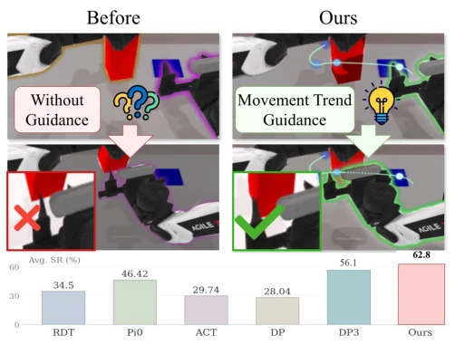
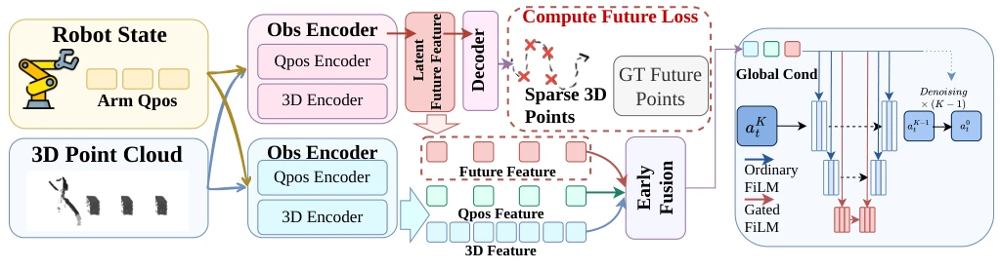
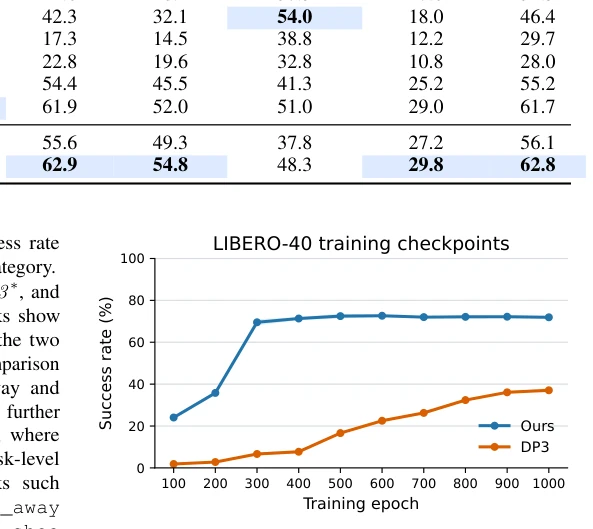
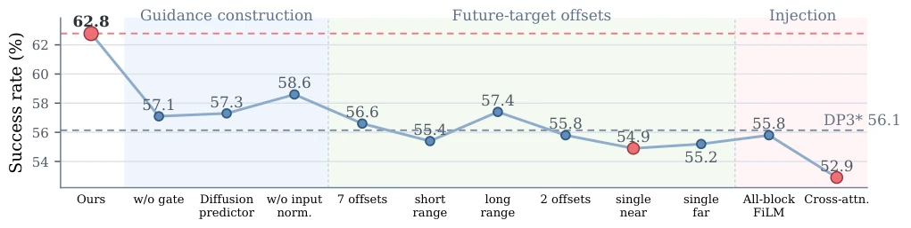
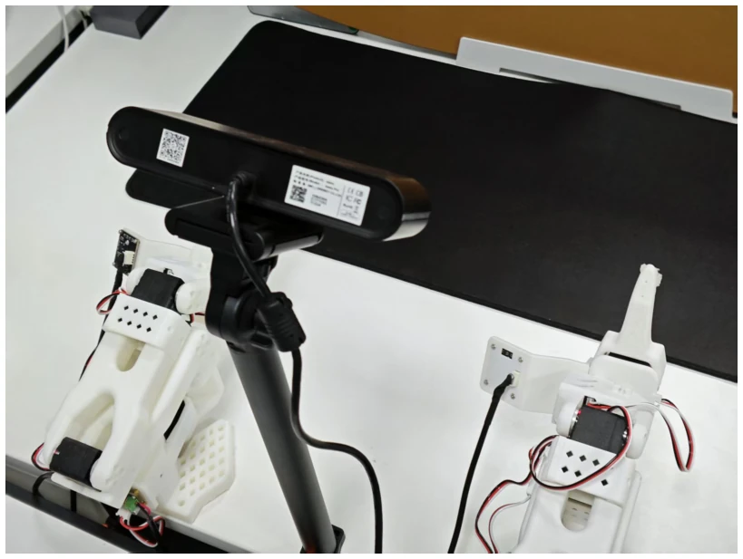
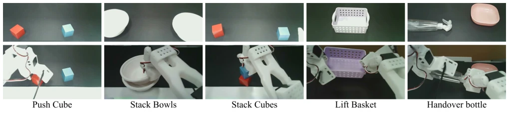

这篇论文给 3D 扩散策略加了个“透视眼”，但没让它真的去规划路径。核心是 Movement Trend Guidance，用隐变量代替显式轨迹。好处是轻量，仅增加 3.52% 参数，推理延迟几乎不变。坏处是遇到遮挡就瞎，因为趋势基于点云。虽然 LIBERO 上效果炸裂，但本质还是靠数据驱动凑出来的“直觉”，而非真正的推理。对于需要精确接触的任务，这种软指导可能不够硬。它保留了 DP3 的架构，只是加了个辅助头，属于“换汤不换药”的改良。不过，在真实机器人上提升明显，说明这种隐式趋势确实有用，比单纯预测未来视图更直接。它没有引入显式规划模块，保持了扩散策略的简洁性，但在遮挡严重场景下，隐变量估计可能失真，导致策略失效。
This paper adds a "perspective eye" to 3D diffusion policies, but does not let it truly plan paths. The core is Movement Trend Guidance, using latent variables to replace explicit trajectories. The benefit is lightweight, adding only 3.52% parameters, inference latency remains almost unchanged. The downside is it goes blind when encountering occlusion, because the trend is based on point clouds. Although performance is remarkable on LIBERO, essentially it is still an "intuition" cobbled together by data-driven methods, rather than true reasoning. For tasks requiring precise contact, this soft guidance may not be hard enough. It retains the DP3 architecture, merely adding an auxiliary head, belonging to a "changing the form but not the substance" improvement. However, the improvement on real robots is significant, indicating this implicit trend is indeed useful, more direct than simply predicting future views. It does not introduce an explicit planning module, maintaining the simplicity of diffusion policies, but in heavily occluded scenarios, latent variable estimation may become distorted, causing policy failure.
研究动机Motivation
3D 扩散策略（如 DP3 [1]）擅长从几何观测生成密集动作，但缺乏对交互走向的预判。现有方法要么预测显式轨迹 [4, 5, 6]，导致预测误差约束后续行为，即使新观测建议修正也无法纠正；要么预测未来视图 [26, 27]，耦合了视觉与动作且计算重。本文指出，控制器不需要知道确切路径，只需知道交互趋势。现有策略将局部控制与长程结构混在一起学，导致多步行为能力不足。特别是在多阶段任务中，缺乏全局引导使得策略难以协调多臂或长程接触，难以理解交互如何展开。这种隐式学习往往导致策略在长程任务中表现不佳，无法有效规划未来接触点。
3D diffusion policies (such as DP3 [1]) excel at generating dense actions from geometric observations, but lack prediction of interaction direction. Existing methods either predict explicit trajectories [4, 5, 6], leading to prediction errors constraining subsequent behavior, unable to correct even if new observations suggest correction; or predict future views [26, 27], coupling vision and action and computationally heavy. This paper points out that the controller does not need to know the exact path, only needs to know the interaction trend. Existing policies mix local control and long-range structure learning together, leading to insufficient multi-step behavior capability. Especially in multi-stage tasks, lack of global guidance makes it difficult for policies to coordinate multi-arm or long-range contact, difficult to understand how interaction unfolds. This implicit learning often leads to poor policy performance in long-range tasks, unable to effectively plan future contact points.

Fig. 1. Movement Trend Guidance for point-cloud diffusion policies. The latent trend provides soft geometric guidance that helps the policy organize future interaction while preserving observation-driven local action generation.
Overall flow: Input point cloud and state history, generate latent variable $z_t$ through trend encoder. During training, $z_t$ supervises prediction of sparse future gripper states; during inference, only keep $z_t$ as global condition. Innovations: 1. Implicit trend representation, not decoded to trajectory, avoiding hard constraints; 2. Bottleneck gated FiLM, inject trend information only at UNet bottleneck, avoiding interference with local denoising; 3. End-to-end joint optimization, auxiliary loss only used for training latent variables. In architecture, trend features fuse with observation features, modulate UNet bottleneck layer via FiLM, providing global structure while retaining local geometric perception. Auxiliary head predicts 4 future offset gripper states, but discarded at inference. This design ensures the policy can both utilize future information and flexibly adjust local actions based on current observations, achieving a balance between global and local.

Fig. 2. Overview of Movement Trend Guidance. The sparse-point symbols denote the Cartesian components of future gripper targets; each target also contains the corresponding gripper state defined in Eq. (16). During training, the auxiliary decoder shapes the latent representation, while its outputs are discarded at inference and never supplied to the action policy. The latent enters the standard global-conditioning pathway, with an additional gated FiLM branch applied only at the UNet bottleneck.
Tested on RoboTwin2.0, LIBERO-40, DexArt, and real robot SO101. Baselines include DP3, ACT, etc. Metric is success rate. Under mixed training, RoboTwin2.0 improved from 56.1% to 62.8%, LIBERO-40 from 37.08% to 71.93%. Ablation shows future supervision is more important than simply increasing latent variable capacity. Real task improvements significant, but failures still occur in occlusion scenarios. Method has obvious advantage in long-range tasks, proving trend guidance effective. LIBERO-Goal improvement largest, indicating big help for goal-oriented tasks. Average improvement 7.25 points on DexArt, proving generalization ability. In real robot experiments, average success rate from 49.0% to 72.0%, showing good sim-to-real transfer ability.

Fig. 3. LIBERO-40 point-cloud evaluation. Overall success rate for checkpoints saved every 100 epochs from epoch 100 to 1000.

Fig. 4. Ablation dimensions under the 50-task mixed-training setting. We vary guidance construction, future-target offsets, and the scope of bottleneck-gated injection; every point is obtained from a shared policy trained jointly on all 50 RoboTwin2.0 tasks. The observation-history length remains fixed.

Fig. 5. Real-robot experimental setup with the SO101 dual-arm platform and Intel RealSense RGB-D cameras. Stereo depth is deprojected with camera intrinsics and transformed with calibrated camera-to-robot extrinsics to obtain the policy point cloud.

Fig. 6. Real-robot demonstrations on five manipulation tasks.